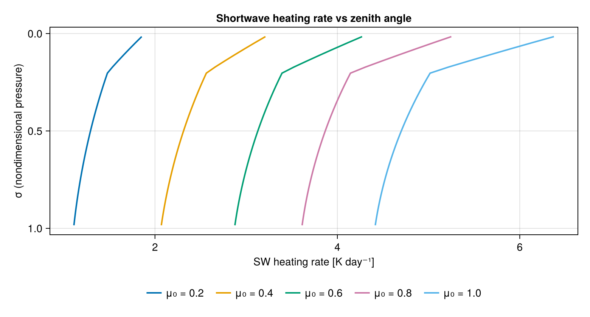
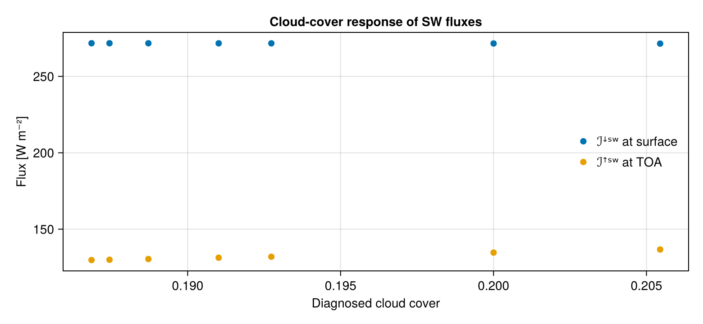

Shortwave: SPEEDY one-band scheme
The OneBandShortwave solver composes three sub-schemes — a diagnostic cloud model, a layer transmissivity, and a radiative-transfer solver — into a single call. It reproduces Fortran SPEEDY (Kucharski, Molteni & Bracco, 2006, Appendix B) with the same parameter defaults.
Transmissivity sensitivity to zenith angle
using NumericalRadiation
using CairoMakie
N = 32
σᵢ = collect(range(0, 1, length = N + 1)) # interface sigma coordinate
grid = ColumnGrid(σᵢ)
profile = AtmosphereProfile(
temperature = collect(range(220, 295, length = N)),
humidity = fill(0.005, N),
geopotential = zeros(N),
surface_pressure = 100_000,
)
FT = Float64
constants = PhysicalConstants(FT)
thermo = ThermodynamicConstants(FT)
scheme = NumericalRadiation.OneBandShortwave(FT)
zenith_cosines = [0.2, 0.4, 0.6, 0.8, 1]
fig = Figure(size = (780, 420))
ax = Axis(fig[1, 1];
xlabel = "SW heating rate [K day⁻¹]",
ylabel = "σ (nondimensional pressure)",
yreversed = true,
title = "Shortwave heating rate vs zenith angle")
for μ₀ in zenith_cosines
surface = SurfaceState(FT; sea_surface_temperature = 295,
land_surface_temperature = NaN,
land_fraction = 0,
ocean_albedo = 0.07,
land_albedo = 0.07,
cos_zenith = μ₀)
Ṫ = zeros(N)
diagnostics = ShortwaveDiagnostics(FT, N)
transmissivity = similar(profile.temperature)
solve_shortwave!(Ṫ, diagnostics, scheme, profile, grid, surface,
constants, thermo; transmissivity_scratch = transmissivity)
lines!(ax, Ṫ .* 86_400, grid.σ_full; label = "μ₀ = $μ₀", linewidth = 2)
end
Legend(fig[2, 1], ax; orientation = :horizontal, framevisible = false)
Near the TOA the heating is dominated by ozone; near the surface by water vapour. At grazing angles (μ₀ → 0) the optical path is long and heating is concentrated aloft, matching the SPEEDY zenith-correction factor (1 + a_zen (1 − μ₀)^n_zen) in BackgroundShortwaveTransmissivity.
Cloud-albedo sensitivity
Repeating the same column but sweeping the cloud cover through the diagnostic scheme's precipitation term shows the surface-insolation response.
using NumericalRadiation
using CairoMakie
N = 16
σᵢ = collect(range(0, 1, length = N + 1))
grid = ColumnGrid(σᵢ)
base_profile = AtmosphereProfile(
temperature = collect(range(220, 295, length = N)),
humidity = fill(0.008, N),
geopotential = zeros(N),
surface_pressure = 100_000,
)
FT = Float64
surface = SurfaceState(FT; sea_surface_temperature = 295,
land_surface_temperature = NaN,
land_fraction = 0,
ocean_albedo = 0.07,
land_albedo = 0.07,
cos_zenith = 0.6)
constants = PhysicalConstants(FT)
thermo = ThermodynamicConstants(FT)
scheme = NumericalRadiation.OneBandShortwave(FT)
rain_rates = [0, 1e-7, 1e-6, 5e-6, 1e-5, 5e-5, 1e-4] # m/s
surface_down = FT[]
toa_up = FT[]
cloud_covers = FT[]
for rain_rate in rain_rates
profile = AtmosphereProfile(temperature = base_profile.temperature,
humidity = base_profile.humidity,
geopotential = base_profile.geopotential,
surface_pressure = base_profile.surface_pressure,
rain_rate = rain_rate)
Ṫ = zeros(N)
diagnostics = ShortwaveDiagnostics(FT, N)
transmissivity = similar(profile.temperature)
solve_shortwave!(Ṫ, diagnostics, scheme, profile, grid, surface,
constants, thermo; transmissivity_scratch = transmissivity)
push!(surface_down, diagnostics.surface_shortwave_down)
push!(toa_up, diagnostics.outgoing_shortwave)
push!(cloud_covers, diagnostics.cloud_cover)
end
fig = Figure(size = (780, 360))
ax = Axis(fig[1, 1];
xlabel = "Diagnosed cloud cover",
ylabel = "Flux [W m⁻²]",
title = "Cloud-cover response of SW fluxes")
scatter!(ax, cloud_covers, surface_down; label = "ℐꜜˢʷ at surface", markersize = 10)
scatter!(ax, cloud_covers, toa_up; label = "ℐꜛˢʷ at TOA", markersize = 10)
axislegend(ax; position = :rc, framevisible = false)
As cloud cover grows, more solar flux is reflected back to space (TOA up rises) and less reaches the surface.